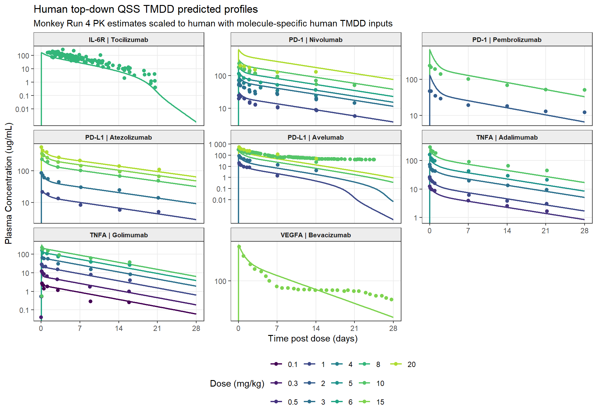

rm(list = ls())
library(tidyverse)
library(data.table)
library(scales)
library(openxlsx)
library(knitr)
library(kableExtra)
library(rxode2)
datadir <- if (dir.exists("../../01_Data")) "../../01_Data" else "01_Data"
outdir <- if (dir.exists("../SimsOutputs") || dir.exists("../Scripts")) "../SimsOutputs/" else "04_TopDown/SimsOutputs/"
dir.create(outdir, recursive = TRUE, showWarnings = FALSE)
figures_dir <- file.path(outdir, "Figures")
dir.create(figures_dir, recursive = TRUE, showWarnings = FALSE)
RUN4_RDS <- file.path(outdir, "TopDownTMDD_Run4_CL_Vc_Q_Vp_fixed_TMDD_Monkey.rds")
PROCESSED_RDS <- file.path(outdir, "TopDownTMDD_Run4_processed_Monkey.rds")
AUC_END_H <- 28 * 24
PROFILE_TIMEPOINTS_H <- c(0, 0.25, 1, 2, 4, 6, 12, 24, 48, 96, 168, 336, 504)
BW_MONKEY_KG <- 3.5
BW_HUMAN_KG <- 70
CL_Q_EXPONENT <- 0.85
VOLUME_EXPONENT <- 1
normalize_names <- function(x) {
x %>%
str_replace("^\\ufeff", "") %>%
str_replace_all("\\.+", ".") %>%
str_replace_all("\\s+", ".") %>%
str_replace_all("\\[", "") %>%
str_replace_all("\\]", "") %>%
str_replace_all("\\(", "") %>%
str_replace_all("\\)", "")
}
normalize_species <- function(x) {
case_when(
str_to_lower(x) %in% c("nhp", "monkey", "cynomolgus monkey") ~ "Monkey",
TRUE ~ str_to_title(x)
)
}
unit_to_hour <- function(time, unit) {
unit_l <- str_to_lower(str_trim(unit))
case_when(
unit_l %in% c("h", "hr", "hrs", "hour", "hours") ~ as.numeric(time),
unit_l %in% c("min", "mins", "minute", "minutes") ~ as.numeric(time) / 60,
unit_l %in% c("day", "days", "d") ~ as.numeric(time) * 24,
TRUE ~ as.numeric(time)
)
}
conc_ugml_to_nm <- function(conc_ugml, mw_g_mol) {
as.numeric(conc_ugml) * 1e6 / as.numeric(mw_g_mol)
}
conc_nm_to_ugml <- function(conc_nm, mw_g_mol) {
as.numeric(conc_nm) * as.numeric(mw_g_mol) / 1e6
}
dose_mgkg_to_nmolkg <- function(dose_mgkg, mw_g_mol) {
as.numeric(dose_mgkg) * 1e6 / as.numeric(mw_g_mol)
}
normalize_molecule <- function(x) {
str_to_title(str_to_lower(str_squish(as.character(x))))
}
convert_rate_to_h <- function(value, unit) {
unit_l <- str_to_lower(str_trim(unit))
case_when(
unit_l %in% c("1/min", "min^-1", "1/minute") ~ as.numeric(value) * 60,
TRUE ~ as.numeric(value)
)
}
convert_kd_to_nm <- function(value, unit) {
unit_l <- str_to_lower(str_trim(unit))
unit_l <- str_replace_all(unit_l, "[^[:ascii:]]", "u")
case_when(
unit_l %in% c("um", "umol/l", "umol/litre", "umol/liter", "umol/l") ~ as.numeric(value) * 1000,
unit_l %in% c("nm", "nmol/l", "nmol/litre", "nmol/liter") ~ as.numeric(value),
TRUE ~ as.numeric(value)
)
}
trapz_auc <- function(time, conc, t_end = Inf) {
keep <- !is.na(time) & !is.na(conc) & conc > 0 & time <= t_end
t <- as.numeric(time[keep])
c <- as.numeric(conc[keep])
if (length(t) < 2) return(NA_real_)
ord <- order(t)
t <- t[ord]
c <- c[ord]
dt <- diff(t)
c1 <- c[-length(c)]
c2 <- c[-1]
use_log <- c1 != c2 & c1 > 0 & c2 > 0
sum(ifelse(use_log, dt * (c1 - c2) / log(c1 / c2), dt * (c1 + c2) / 2))
}
mean_or_na <- function(x) {
x <- x[is.finite(x)]
if (length(x) == 0) NA_real_ else mean(x)
}
best_terminal_lambda_z <- function(time_h, conc, min_points = 3L) {
terminal_data <- tibble(time_h = as.numeric(time_h), conc = as.numeric(conc)) %>%
filter(is.finite(time_h), is.finite(conc), conc > 0) %>%
group_by(time_h) %>%
summarise(conc = mean(conc), .groups = "drop") %>%
arrange(time_h)
if (nrow(terminal_data) < min_points) return(NA_real_)
tmax_index <- which.max(terminal_data$conc)[1]
post_cmax <- terminal_data %>% slice((tmax_index + 1L):n())
if (nrow(post_cmax) < min_points) post_cmax <- terminal_data %>% slice(tmax_index:n())
if (nrow(post_cmax) < min_points) return(NA_real_)
x <- post_cmax$time_h
y <- log(post_cmax$conc)
total_n <- length(x)
suffix_sum <- function(z) rev(cumsum(rev(z)))
sx <- suffix_sum(x)
sy <- suffix_sum(y)
sxx <- suffix_sum(x * x)
syy <- suffix_sum(y * y)
sxy <- suffix_sum(x * y)
terminal_n <- seq.int(min_points, total_n)
start_index <- total_n - terminal_n + 1L
s_xx <- sxx[start_index] - sx[start_index]^2 / terminal_n
s_yy <- syy[start_index] - sy[start_index]^2 / terminal_n
s_xy <- sxy[start_index] - sx[start_index] * sy[start_index] / terminal_n
slope <- s_xy / s_xx
r2 <- pmin(pmax((s_xy^2) / (s_xx * s_yy), 0), 1)
adj_r2 <- 1 - (1 - r2) * (terminal_n - 1) / (terminal_n - 2)
candidates <- tibble(slope, adj_r2, terminal_n) %>%
filter(is.finite(slope), slope < 0, is.finite(adj_r2)) %>%
arrange(desc(adj_r2), desc(terminal_n))
if (nrow(candidates) == 0) NA_real_ else -candidates$slope[1]
}
auc_inf_ug_h_ml <- function(time_h, conc, lambda_z) {
profile <- tibble(time_h = as.numeric(time_h), conc = as.numeric(conc)) %>%
filter(
is.finite(time_h), is.finite(conc),
time_h >= 0, time_h <= AUC_END_H, conc >= 0
) %>%
group_by(time_h) %>%
summarise(conc = mean(conc), .groups = "drop") %>%
arrange(time_h)
if (nrow(profile) == 0 || !any(profile$conc > 0) || !is.finite(lambda_z)) {
return(NA_real_)
}
if (!any(profile$time_h == 0)) {
profile <- bind_rows(tibble(time_h = 0, conc = 0), profile) %>% arrange(time_h)
}
positive <- profile %>% filter(conc > 0)
last_index <- which.max(positive$time_h)
c_last <- positive$conc[last_index]
last_time <- positive$time_h[last_index]
through_last <- profile %>% filter(time_h <= last_time)
dt <- diff(through_last$time_h)
c1 <- through_last$conc[-nrow(through_last)]
c2 <- through_last$conc[-1]
declining <- c2 < c1 & c1 > 0 & c2 > 0
auc_last <- sum(ifelse(
declining,
dt * (c1 - c2) / log(c1 / c2),
dt * (c1 + c2) / 2
))
auc_last + c_last / lambda_z
}
terminal_clearance_l_day <- function(dose_mg_kg, body_weight_kg, auc_inf) {
if (!is.finite(auc_inf) || auc_inf <= 0) return(NA_real_)
24 * dose_mg_kg * body_weight_kg / auc_inf
}
evaluate_profile_timepoints <- function(time_h, conc) {
profile <- tibble(time_h = as.numeric(time_h), conc = as.numeric(conc)) %>%
filter(is.finite(time_h), is.finite(conc), time_h >= 0, conc >= 0) %>%
group_by(time_h) %>%
summarise(conc = mean(conc), .groups = "drop") %>%
arrange(time_h)
if (nrow(profile) == 0) {
return(tibble(Eval_Time_h = PROFILE_TIMEPOINTS_H, Eval_Conc_ug_mL = NA_real_))
}
if (!any(profile$time_h == 0)) {
profile <- bind_rows(tibble(time_h = 0, conc = 0), profile) %>% arrange(time_h)
}
interpolate_one <- function(target_h) {
exact <- which(abs(profile$time_h - target_h) < 1e-10)
if (length(exact) > 0) return(profile$conc[exact[1]])
if (target_h < min(profile$time_h) || target_h > max(profile$time_h)) return(NA_real_)
lower <- max(which(profile$time_h < target_h))
upper <- min(which(profile$time_h > target_h))
fraction <- (target_h - profile$time_h[lower]) /
(profile$time_h[upper] - profile$time_h[lower])
c1 <- profile$conc[lower]
c2 <- profile$conc[upper]
if (c1 > 0 && c2 > 0) {
exp(log(c1) + fraction * (log(c2) - log(c1)))
} else {
c1 + fraction * (c2 - c1)
}
}
tibble(
Eval_Time_h = PROFILE_TIMEPOINTS_H,
Eval_Conc_ug_mL = map_dbl(PROFILE_TIMEPOINTS_H, interpolate_one)
)
}
fmt_fe <- function(x) {
cell_spec(
ifelse(is.na(x), "", formatC(x, format = "f", digits = 2)),
background = ifelse(!is.na(x) & x >= 0.5 & x <= 2, "#d4edda", "#f8d7da"),
color = ifelse(!is.na(x) & x >= 0.5 & x <= 2, "#155724", "#721c24"),
bold = TRUE
)
}
parse_infusion_duration_h <- function(route) {
route_l <- str_to_lower(coalesce(route, ""))
duration_h <- suppressWarnings(as.numeric(
str_match(route_l, "([0-9]+\\.?[0-9]*)\\s*h(?:r|our)?")[, 2]
))
duration_min <- suppressWarnings(as.numeric(
str_match(route_l, "([0-9]+\\.?[0-9]*)\\s*min(?:ute)?")[, 2]
))
case_when(
str_detect(route_l, "infusion") & is.finite(duration_h) & duration_h > 0 ~ duration_h,
str_detect(route_l, "infusion") & is.finite(duration_min) & duration_min > 0 ~ duration_min / 60,
str_detect(route_l, "infusion") ~ 1,
TRUE ~ 0
)
}Human Predictions using Top-down QSS TMDD Run 4 Fits from Monkey
Set up
Read human data and inputs
obs_raw <- read.csv(
file.path(datadir, "Human", "mAb_data_human.csv"),
stringsAsFactors = FALSE,
check.names = FALSE
)
names(obs_raw) <- normalize_names(names(obs_raw))
human_param_raw <- read.xlsx(file.path(datadir, "Human", "Parameters_human.xlsx"), sheet = 1)
names(human_param_raw) <- normalize_names(names(human_param_raw))
obs_points <- obs_raw %>%
transmute(
Study.Id = as.character(.data[["Study.Id"]]),
Subject.Id = coalesce(
na_if(as.character(.data[["Subject.Id"]]), "."),
na_if(as.character(.data[["Group.Id"]]), "."),
as.character(.data[["Study.Id"]])
),
Species = normalize_species(.data[["Species"]]),
Dose = as.numeric(.data[["Dose"]]),
Molecule = normalize_molecule(.data[["Molecule"]]),
MW = as.numeric(.data[["Molecular.Weight"]]),
Time_h = unit_to_hour(.data[["Time"]], .data[["Time.unit"]]),
Conc_ugmL = as.numeric(.data[["Measurement"]]),
Conc_unit = .data[["Measurement.unit"]],
Route = .data[["Route"]],
Infusion_duration_h = parse_infusion_duration_h(.data[["Route"]])
) %>%
filter(
Species == "Human",
!grepl("^SC$", trimws(Route), ignore.case = TRUE),
str_to_lower(Conc_unit) %in% c("ug/ml", "ug/ml", "microgram/ml", "micrograms/ml"),
!is.na(Time_h),
!is.na(Conc_ugmL),
Conc_ugmL > 0,
Time_h <= AUC_END_H
) %>%
mutate(
Profile = paste(Molecule, Dose, Subject.Id, Study.Id, sep = "_"),
ID = as.integer(factor(Profile)),
DV = conc_ugml_to_nm(Conc_ugmL, MW)
)
obs <- obs_points %>%
group_by(Molecule, Species, Dose, MW, Time_h) %>%
summarise(
Conc_ugmL = median(Conc_ugmL, na.rm = TRUE),
DV = median(DV, na.rm = TRUE),
Infusion_duration_h = median(Infusion_duration_h, na.rm = TRUE),
n_points = n(),
.groups = "drop"
) %>%
arrange(Molecule, Dose, Time_h) %>%
mutate(
Study.Id = "Median_by_molecule_dose_time",
Subject.Id = paste(Molecule, Dose, "median", sep = "_"),
Route = if_else(Infusion_duration_h > 0, paste0("IV ", Infusion_duration_h, "h Infusion"), "IV"),
Profile = paste(Molecule, Dose, sep = "_"),
ID = as.integer(factor(Profile))
) %>%
select(
Study.Id, Subject.Id, Species, Dose, Molecule, MW, Time_h,
Conc_ugmL, Route, Infusion_duration_h, Profile, ID, DV, n_points
)
human_tmdd_params <- human_param_raw %>%
transmute(
Molecule = normalize_molecule(.data[["Drug.Name"]]),
Target = .data[["Target.Name"]],
Parameter = .data[["Parameter.Name.in.PK-Sim"]],
Value = as.numeric(.data[["Value.from.Source"]]),
Unit = .data[["Unit"]],
Source = .data[["Source"]]
) %>%
mutate(
parameter_key = case_when(
str_detect(str_to_lower(Parameter), "^kd$") ~ "human_kd_nm",
str_to_lower(Parameter) == "koff" ~ "human_koff_h",
str_to_lower(Parameter) == "kint" ~ "human_kint_h",
str_to_lower(Parameter) == "kdeg" ~ "human_kdeg_h",
str_to_lower(Parameter) == "reference concentration" ~ "human_rtot_nm",
TRUE ~ NA_character_
),
unit_for_conversion = case_when(
parameter_key == "human_koff_h" &
!coalesce(str_detect(str_to_lower(Unit), "1/|min|h|hour"), FALSE) ~ "1/min",
TRUE ~ Unit
),
value_std = case_when(
parameter_key %in% c("human_kd_nm", "human_rtot_nm") ~ convert_kd_to_nm(Value, Unit),
parameter_key == "human_koff_h" ~ convert_rate_to_h(Value, unit_for_conversion),
parameter_key %in% c("human_kint_h", "human_kdeg_h") ~ convert_rate_to_h(Value, Unit),
TRUE ~ NA_real_
)
) %>%
filter(!is.na(parameter_key)) %>%
select(Molecule, Target, parameter_key, value_std) %>%
distinct() %>%
pivot_wider(
names_from = parameter_key,
values_from = value_std,
values_fn = list(value_std = mean)
) %>%
mutate(
human_kon_inv_nmh = human_koff_h / human_kd_nm,
human_Kss_nM = (human_koff_h + human_kint_h) / human_kon_inv_nmh
)
obs %>%
count(Molecule, Dose, ID, Infusion_duration_h, name = "n_time_points") %>%
arrange(Molecule, Dose) %>%
knitr::kable(caption = "Median human IV profiles used for monkey-to-human prediction")| Molecule | Dose | ID | Infusion_duration_h | n_time_points |
|---|---|---|---|---|
| Adalimumab | 0.5 | 1 | 1.0 | 7 |
| Adalimumab | 1.0 | 2 | 1.0 | 10 |
| Adalimumab | 3.0 | 4 | 1.0 | 8 |
| Adalimumab | 5.0 | 5 | 1.0 | 8 |
| Adalimumab | 10.0 | 3 | 1.0 | 7 |
| Atezolizumab | 1.0 | 6 | 1.0 | 6 |
| Atezolizumab | 3.0 | 10 | 1.0 | 8 |
| Atezolizumab | 10.0 | 7 | 1.0 | 6 |
| Atezolizumab | 15.0 | 8 | 1.0 | 7 |
| Atezolizumab | 20.0 | 9 | 1.0 | 7 |
| Avelumab | 1.0 | 11 | 1.0 | 7 |
| Avelumab | 3.0 | 14 | 1.0 | 8 |
| Avelumab | 10.0 | 12 | 1.0 | 91 |
| Avelumab | 20.0 | 13 | 1.0 | 8 |
| Bevacizumab | 15.0 | 15 | 1.0 | 29 |
| Golimumab | 0.1 | 16 | 2.0 | 10 |
| Golimumab | 0.3 | 17 | 2.0 | 9 |
| Golimumab | 1.0 | 18 | 2.0 | 8 |
| Golimumab | 3.0 | 20 | 2.0 | 7 |
| Golimumab | 6.0 | 21 | 2.0 | 7 |
| Golimumab | 10.0 | 19 | 2.0 | 7 |
| Nivolumab | 1.0 | 22 | 1.0 | 16 |
| Nivolumab | 3.0 | 25 | 1.0 | 16 |
| Nivolumab | 4.0 | 26 | 1.0 | 7 |
| Nivolumab | 6.0 | 27 | 1.0 | 7 |
| Nivolumab | 10.0 | 23 | 1.0 | 16 |
| Nivolumab | 20.0 | 24 | 1.0 | 6 |
| Pembrolizumab | 2.0 | 29 | 0.5 | 8 |
| Pembrolizumab | 10.0 | 28 | 0.5 | 8 |
| Tocilizumab | 8.0 | 30 | 1.0 | 110 |
human_tmdd_params %>%
arrange(Molecule) %>%
knitr::kable(digits = 4, caption = "Human TMDD inputs used for QSS predictions")| Molecule | Target | human_kd_nm | human_koff_h | human_kint_h | human_rtot_nm | human_kdeg_h | human_kon_inv_nmh | human_Kss_nM |
|---|---|---|---|---|---|---|---|---|
| Adalimumab | TNFA | 0.1270 | 0.5760 | 0.866 | 0.0010 | 0.2230 | 4.5354 | 0.3179 |
| Atezolizumab | PD-L1 | 299.0000 | 0.5616 | 0.606 | 0.6090 | 0.0426 | 0.0019 | 621.6389 |
| Avelumab | PD-L1 | 0.0467 | 0.1044 | 0.250 | 0.6090 | 0.0426 | 2.2355 | 0.1585 |
| Bevacizumab | VEGFA | 0.0580 | 0.1116 | 0.480 | 0.0130 | 0.4800 | 1.9241 | 0.3075 |
| Golimumab | TNFA | 0.0180 | 0.3350 | 0.866 | 0.0010 | 0.2230 | 18.6100 | 0.0645 |
| Nivolumab | PD-1 | 1.4500 | 6.8400 | 0.027 | 0.0714 | 0.0270 | 4.7172 | 1.4557 |
| Pembrolizumab | PD-1 | 0.3100 | 0.1020 | 0.027 | 0.0714 | 0.0270 | 0.3290 | 0.3921 |
| Tocilizumab | IL-6R | 1.3400 | 0.7704 | 0.280 | 1.0000 | 0.2800 | 0.5749 | 1.8270 |
Read monkey Run 4 PK estimates and scale to human
read_run4_summary <- function() {
if (file.exists(RUN4_RDS)) {
run4_fits <- readRDS(RUN4_RDS)
run4_summary <- purrr::map_dfr(run4_fits, "summary")
if (nrow(run4_summary) > 0) return(run4_summary)
}
if (file.exists(PROCESSED_RDS)) {
processed <- readRDS(PROCESSED_RDS)
run4_summary <- processed$fit_summary %>%
filter(Run == "Run4_CL_Vc_Q_Vp_fixed_TMDD")
if (nrow(run4_summary) > 0) return(run4_summary)
}
stop(
"Could not read Run 4 monkey parameters. Expected ",
RUN4_RDS,
" or ",
PROCESSED_RDS,
call. = FALSE
)
}
run4_fit_summary <- read_run4_summary() %>%
filter(Run == "Run4_CL_Vc_Q_Vp_fixed_TMDD") %>%
mutate(Molecule = normalize_molecule(Molecule)) %>%
select(
Run, Molecule, OFV,
monkey_CL_L_h_kg = CL_L_h_kg,
monkey_Vc_L_kg = Vc_L_kg,
monkey_Q_L_h_kg = Q_L_h_kg,
monkey_Vp_L_kg = Vp_L_kg,
Fit_Status, Fit_Error
) %>%
filter(
if_all(
c(monkey_CL_L_h_kg, monkey_Vc_L_kg, monkey_Q_L_h_kg, monkey_Vp_L_kg),
~ is.finite(.x)
)
)
bw_ratio <- BW_HUMAN_KG / BW_MONKEY_KG
cl_q_per_kg_factor <- bw_ratio^CL_Q_EXPONENT / bw_ratio
volume_per_kg_factor <- bw_ratio^VOLUME_EXPONENT / bw_ratio
prediction_parameters <- run4_fit_summary %>%
inner_join(human_tmdd_params, by = "Molecule") %>%
inner_join(obs %>% distinct(Molecule, MW), by = "Molecule") %>%
mutate(
human_CL_L_h_kg = monkey_CL_L_h_kg * cl_q_per_kg_factor,
human_Q_L_h_kg = monkey_Q_L_h_kg * cl_q_per_kg_factor,
human_Vc_L_kg = monkey_Vc_L_kg * volume_per_kg_factor,
human_Vp_L_kg = monkey_Vp_L_kg * volume_per_kg_factor,
human_CL_L_h = monkey_CL_L_h_kg * BW_MONKEY_KG * bw_ratio^CL_Q_EXPONENT,
human_Q_L_h = monkey_Q_L_h_kg * BW_MONKEY_KG * bw_ratio^CL_Q_EXPONENT,
human_Vc_L = monkey_Vc_L_kg * BW_MONKEY_KG * bw_ratio^VOLUME_EXPONENT,
human_Vp_L = monkey_Vp_L_kg * BW_MONKEY_KG * bw_ratio^VOLUME_EXPONENT,
human_ksyn_nM_h = human_rtot_nm * human_kdeg_h
) %>%
arrange(Molecule)
missing_inputs <- setdiff(unique(obs$Molecule), prediction_parameters$Molecule)
if (length(missing_inputs) > 0) {
warning(
"Skipping human observed molecules without both Run 4 monkey PK estimates and complete human TMDD inputs: ",
paste(missing_inputs, collapse = ", "),
call. = FALSE
)
}
prediction_parameters %>%
select(
Molecule, Target,
monkey_CL_L_h_kg, human_CL_L_h_kg, human_CL_L_h,
monkey_Q_L_h_kg, human_Q_L_h_kg, human_Q_L_h,
monkey_Vc_L_kg, human_Vc_L_kg, human_Vc_L,
monkey_Vp_L_kg, human_Vp_L_kg, human_Vp_L,
human_rtot_nm, human_kd_nm, human_koff_h, human_kon_inv_nmh,
human_kint_h, human_kdeg_h, human_Kss_nM
) %>%
knitr::kable(
digits = 4,
caption = "Monkey Run 4 PK estimates after human allometric scaling with human TMDD inputs"
)| Molecule | Target | monkey_CL_L_h_kg | human_CL_L_h_kg | human_CL_L_h | monkey_Q_L_h_kg | human_Q_L_h_kg | human_Q_L_h | monkey_Vc_L_kg | human_Vc_L_kg | human_Vc_L | monkey_Vp_L_kg | human_Vp_L_kg | human_Vp_L | human_rtot_nm | human_kd_nm | human_koff_h | human_kon_inv_nmh | human_kint_h | human_kdeg_h | human_Kss_nM |
|---|---|---|---|---|---|---|---|---|---|---|---|---|---|---|---|---|---|---|---|---|
| Adalimumab | TNFA | 0.0004 | 2e-04 | 0.0160 | 0.0010 | 0.0006 | 0.0447 | 0.0467 | 0.0467 | 3.2681 | 0.0276 | 0.0276 | 1.9292 | 0.0010 | 0.1270 | 0.5760 | 4.5354 | 0.866 | 0.2230 | 0.3179 |
| Atezolizumab | PD-L1 | 0.0002 | 1e-04 | 0.0102 | 0.0010 | 0.0006 | 0.0447 | 0.0396 | 0.0396 | 2.7687 | 0.0221 | 0.0221 | 1.5480 | 0.6090 | 299.0000 | 0.5616 | 0.0019 | 0.606 | 0.0426 | 621.6389 |
| Avelumab | PD-L1 | 0.0012 | 7e-04 | 0.0516 | 0.0015 | 0.0010 | 0.0683 | 0.0435 | 0.0435 | 3.0462 | 0.0394 | 0.0394 | 2.7565 | 0.6090 | 0.0467 | 0.1044 | 2.2355 | 0.250 | 0.0426 | 0.1585 |
| Bevacizumab | VEGFA | 0.0003 | 2e-04 | 0.0142 | 0.0010 | 0.0006 | 0.0447 | 0.0474 | 0.0474 | 3.3199 | 0.0270 | 0.0270 | 1.8933 | 0.0130 | 0.0580 | 0.1116 | 1.9241 | 0.480 | 0.4800 | 0.3075 |
| Golimumab | TNFA | 0.0004 | 2e-04 | 0.0171 | 0.0038 | 0.0024 | 0.1709 | 0.0288 | 0.0288 | 2.0185 | 0.0171 | 0.0171 | 1.1999 | 0.0010 | 0.0180 | 0.3350 | 18.6100 | 0.866 | 0.2230 | 0.0645 |
| Nivolumab | PD-1 | 0.0002 | 1e-04 | 0.0083 | 0.0010 | 0.0006 | 0.0447 | 0.0312 | 0.0312 | 2.1872 | 0.0149 | 0.0149 | 1.0436 | 0.0714 | 1.4500 | 6.8400 | 4.7172 | 0.027 | 0.0270 | 1.4557 |
| Pembrolizumab | PD-1 | 0.0002 | 1e-04 | 0.0084 | 0.0007 | 0.0005 | 0.0315 | 0.0150 | 0.0150 | 1.0513 | 0.0254 | 0.0254 | 1.7789 | 0.0714 | 0.3100 | 0.1020 | 0.3290 | 0.027 | 0.0270 | 0.3921 |
| Tocilizumab | IL-6R | 0.0008 | 5e-04 | 0.0359 | 0.0010 | 0.0006 | 0.0447 | 0.0477 | 0.0477 | 3.3407 | 0.0206 | 0.0206 | 1.4412 | 1.0000 | 1.3400 | 0.7704 | 0.5749 | 0.280 | 0.2800 | 1.8270 |
QSS TMDD human simulations
The QSS model is the same two-compartment QSS TMDD structure used for the monkey fits. Monkey Run 4 CL and Q are scaled with a 0.85 allometric exponent, while Vc (V1) and Vp (V2) are scaled with a 1.0 exponent. The per-kilogram values are converted back to the 70 kg human basis used by the model. All TMDD inputs are molecule-specific human values from Parameters_human.xlsx; no monkey TMDD input is carried into the human simulations.
qss_rxode_model <- rxode2::rxode({
Ltot <- centr / vc
Cp <- peri / vp
free_drug <- 0.5 * ((Ltot - total_target - kss) + sqrt((Ltot - total_target - kss)^2 + 4 * kss * Ltot + 1e-12))
complex <- Ltot - free_drug
free_target <- total_target - complex
d/dt(centr) = -cl * free_drug - q * free_drug + q * Cp - kint * complex * vc
d/dt(peri) = q * free_drug - q * Cp
d/dt(total_target) = ksyn - kdeg * free_target - kint * complex
})
simulate_human_qss_profile <- function(dat_id, param_row) {
dense_times <- seq(
0,
max(AUC_END_H, max(dat_id$Time_h, na.rm = TRUE)),
by = 1
)
event_times <- sort(unique(c(
dense_times,
dat_id$Time_h,
dat_id$Infusion_duration_h[1]
)))
dose_nmolkg <- dose_mgkg_to_nmolkg(dat_id$Dose[1], dat_id$MW[1])
infusion_duration <- dat_id$Infusion_duration_h[1]
event_table <- tibble(
id = dat_id$ID[1],
time = event_times,
amt = NA_real_,
evid = 0L,
cmt = "centr",
rate = NA_real_
) %>%
add_row(
id = dat_id$ID[1],
time = 0,
amt = dose_nmolkg,
evid = 1L,
cmt = "centr",
rate = if_else(infusion_duration > 0, dose_nmolkg / infusion_duration, NA_real_)
) %>%
arrange(time, desc(evid)) %>%
as.data.frame()
theta <- c(
cl = param_row$human_CL_L_h_kg,
vc = param_row$human_Vc_L_kg,
q = param_row$human_Q_L_h_kg,
vp = param_row$human_Vp_L_kg,
r0 = param_row$human_rtot_nm,
kdeg = param_row$human_kdeg_h,
kint = param_row$human_kint_h,
kss = param_row$human_Kss_nM,
ksyn = param_row$human_ksyn_nM_h
)
rxode2::rxSolve(
qss_rxode_model,
params = theta,
events = event_table,
inits = c(centr = 0, peri = 0, total_target = theta[["r0"]]),
rtol = 1e-6,
atol = 1e-9,
hmin = 1e-12,
maxsteps = 100000,
returnType = "data.frame"
) %>%
as_tibble() %>%
transmute(
Run = "Run4_PK_human_scaled_human_TMDD",
ID = as.integer(dat_id$ID[1]),
TIME = as.numeric(time),
Pred_nM = pmax(as.numeric(Ltot), 0),
Pred_ugmL = conc_nm_to_ugml(Pred_nM, dat_id$MW[1]),
Molecule = dat_id$Molecule[1],
Dose = dat_id$Dose[1],
MW = dat_id$MW[1],
Infusion_duration_h = infusion_duration,
Time_type = if_else(TIME %in% dat_id$Time_h, "Observed time", "Grid time")
)
}
obs_for_prediction <- obs %>%
semi_join(prediction_parameters, by = "Molecule")
predictions <- map_dfr(unique(obs_for_prediction$ID), function(profile_id) {
dat_id <- obs_for_prediction %>%
filter(ID == profile_id) %>%
arrange(Time_h)
param_row <- prediction_parameters %>%
filter(Molecule == dat_id$Molecule[1])
simulate_human_qss_profile(dat_id, param_row)
})
predictions_at_observed_times <- predictions %>%
filter(Time_type == "Observed time") %>%
inner_join(
obs_for_prediction %>% select(ID, TIME = Time_h, Observed_ugmL = Conc_ugmL, Observed_nM = DV, n_points),
by = c("ID", "TIME")
)
predictions %>%
count(Molecule, Dose, Infusion_duration_h, name = "n_simulated_times") %>%
arrange(Molecule, Dose) %>%
knitr::kable(caption = "Human QSS TMDD simulation audit by molecule and dose")| Molecule | Dose | Infusion_duration_h | n_simulated_times |
|---|---|---|---|
| Adalimumab | 0.5 | 1.0 | 679 |
| Adalimumab | 1.0 | 1.0 | 682 |
| Adalimumab | 3.0 | 1.0 | 681 |
| Adalimumab | 5.0 | 1.0 | 681 |
| Adalimumab | 10.0 | 1.0 | 680 |
| Atezolizumab | 1.0 | 1.0 | 679 |
| Atezolizumab | 3.0 | 1.0 | 680 |
| Atezolizumab | 10.0 | 1.0 | 679 |
| Atezolizumab | 15.0 | 1.0 | 680 |
| Atezolizumab | 20.0 | 1.0 | 679 |
| Avelumab | 1.0 | 1.0 | 680 |
| Avelumab | 3.0 | 1.0 | 681 |
| Avelumab | 10.0 | 1.0 | 764 |
| Avelumab | 20.0 | 1.0 | 681 |
| Bevacizumab | 15.0 | 1.0 | 702 |
| Golimumab | 0.1 | 2.0 | 682 |
| Golimumab | 0.3 | 2.0 | 681 |
| Golimumab | 1.0 | 2.0 | 680 |
| Golimumab | 3.0 | 2.0 | 680 |
| Golimumab | 6.0 | 2.0 | 680 |
| Golimumab | 10.0 | 2.0 | 680 |
| Nivolumab | 1.0 | 1.0 | 689 |
| Nivolumab | 3.0 | 1.0 | 688 |
| Nivolumab | 4.0 | 1.0 | 680 |
| Nivolumab | 6.0 | 1.0 | 680 |
| Nivolumab | 10.0 | 1.0 | 688 |
| Nivolumab | 20.0 | 1.0 | 679 |
| Pembrolizumab | 2.0 | 0.5 | 681 |
| Pembrolizumab | 10.0 | 0.5 | 681 |
| Tocilizumab | 8.0 | 1.0 | 774 |
Process outputs
Terminal lambda_z is selected from consecutive post-Cmax suffixes using the largest adjusted R-squared. AUCinf = AUClast + Clast/lambda_z, and whole-human clearance is 24 * Dose * BW / AUCinf using the generic 70 kg human body weight, never a subject-specific weight. Whole-profile goodness of fit is the arithmetic mean of predicted/observed fold errors at common positive observed concentrations at 0, 0.25, 1, 2, 4, 6, 12, 24, 48, 96, 168, 336, and 504 h.
obs_metrics <- obs_for_prediction %>%
group_by(Molecule, Dose, ID) %>%
summarise(
Obs_Cmax = max(Conc_ugmL, na.rm = TRUE),
Obs_AUC = trapz_auc(Time_h, Conc_ugmL, t_end = AUC_END_H),
Obs_lambda_z_1_h = best_terminal_lambda_z(Time_h, Conc_ugmL),
Obs_AUCinf = auc_inf_ug_h_ml(Time_h, Conc_ugmL, Obs_lambda_z_1_h),
Obs_CL_L_day = terminal_clearance_l_day(Dose[1], BW_HUMAN_KG, Obs_AUCinf),
.groups = "drop"
) %>%
group_by(Molecule, Dose) %>%
summarise(
Obs_Cmax = mean(Obs_Cmax, na.rm = TRUE),
Obs_AUC = mean(Obs_AUC, na.rm = TRUE),
Obs_AUCinf = mean_or_na(Obs_AUCinf),
Obs_CL_L_day = mean_or_na(Obs_CL_L_day),
.groups = "drop"
)
pred_metrics <- predictions %>%
filter(TIME <= AUC_END_H) %>%
group_by(Run, Molecule, Dose, ID) %>%
summarise(
Pred_Cmax = max(Pred_ugmL, na.rm = TRUE),
Pred_AUC = trapz_auc(TIME, Pred_ugmL, t_end = AUC_END_H),
Pred_lambda_z_1_h = best_terminal_lambda_z(TIME, Pred_ugmL),
Pred_AUCinf = auc_inf_ug_h_ml(TIME, Pred_ugmL, Pred_lambda_z_1_h),
Pred_CL_L_day = terminal_clearance_l_day(Dose[1], BW_HUMAN_KG, Pred_AUCinf),
.groups = "drop"
) %>%
group_by(Run, Molecule, Dose) %>%
summarise(
Pred_Cmax = mean(Pred_Cmax, na.rm = TRUE),
Pred_AUC = mean(Pred_AUC, na.rm = TRUE),
Pred_AUCinf = mean_or_na(Pred_AUCinf),
Pred_CL_L_day = mean_or_na(Pred_CL_L_day),
.groups = "drop"
)
obs_profile_timepoints <- obs_for_prediction %>%
group_by(Molecule, Dose, ID) %>%
group_modify(~ evaluate_profile_timepoints(.x$Time_h, .x$Conc_ugmL)) %>%
ungroup() %>%
group_by(Molecule, Dose, Eval_Time_h) %>%
summarise(Obs_Eval_Conc = mean_or_na(Eval_Conc_ug_mL), .groups = "drop")
pred_profile_timepoints <- predictions %>%
group_by(Run, Molecule, Dose, ID) %>%
group_modify(~ evaluate_profile_timepoints(.x$TIME, .x$Pred_ugmL)) %>%
ungroup() %>%
group_by(Run, Molecule, Dose, Eval_Time_h) %>%
summarise(Pred_Eval_Conc = mean_or_na(Eval_Conc_ug_mL), .groups = "drop")
profile_gof <- full_join(
pred_profile_timepoints,
obs_profile_timepoints,
by = c("Molecule", "Dose", "Eval_Time_h")
) %>%
group_by(Run, Molecule, Dose) %>%
summarise(
Obs_mean_profile_conc = mean_or_na(Obs_Eval_Conc),
Pred_mean_profile_conc = mean_or_na(Pred_Eval_Conc),
GOF_timepoints_n = sum(
is.finite(Obs_Eval_Conc) & Obs_Eval_Conc > 0 & is.finite(Pred_Eval_Conc)
),
Mean_pointwise_FE = mean_or_na(if_else(
is.finite(Obs_Eval_Conc) & Obs_Eval_Conc > 0 & is.finite(Pred_Eval_Conc),
Pred_Eval_Conc / Obs_Eval_Conc,
NA_real_
)),
.groups = "drop"
)
metrics_tbl <- pred_metrics %>%
left_join(obs_metrics, by = c("Molecule", "Dose")) %>%
left_join(profile_gof, by = c("Run", "Molecule", "Dose")) %>%
mutate(
Species = "Human",
BW_kg = BW_HUMAN_KG,
FE_Cmax = Pred_Cmax / Obs_Cmax,
FE_AUC = Pred_AUC / Obs_AUC,
FE_AUCinf = Pred_AUCinf / Obs_AUCinf,
FE_CL = Pred_CL_L_day / Obs_CL_L_day
) %>%
left_join(prediction_parameters %>% distinct(Molecule, Target), by = "Molecule") %>%
arrange(Molecule, Dose, Run)
metrics_export <- metrics_tbl %>%
transmute(
Run, Species, Target, Molecule,
`Dose (mg/kg)` = Dose,
`Generic BW (kg)` = BW_kg,
`Observed Cmax (ug/mL)` = Obs_Cmax,
`Predicted Cmax (ug/mL)` = Pred_Cmax,
`FE Cmax` = FE_Cmax,
`Observed AUC0-28d (ug*h/mL)` = Obs_AUC,
`Predicted AUC0-28d (ug*h/mL)` = Pred_AUC,
`FE AUC0-28d` = FE_AUC,
`Observed AUCinf (ug*h/mL)` = Obs_AUCinf,
`Predicted AUCinf (ug*h/mL)` = Pred_AUCinf,
`FE AUCinf` = FE_AUCinf,
`Observed terminal CL (L/day)` = Obs_CL_L_day,
`Predicted terminal CL (L/day)` = Pred_CL_L_day,
`FE terminal CL` = FE_CL,
`Observed mean profile concentration (ug/mL)` = Obs_mean_profile_conc,
`Predicted mean profile concentration (ug/mL)` = Pred_mean_profile_conc,
`Mean pointwise FE` = Mean_pointwise_FE,
`GOF timepoints (n)` = GOF_timepoints_n
)
parameter_tbl <- prediction_parameters %>%
select(
Molecule, Target, Run, OFV, Fit_Status,
human_rtot_nm, human_kd_nm, human_koff_h, human_kon_inv_nmh,
human_kint_h, human_kdeg_h, human_Kss_nM,
monkey_CL_L_h_kg, human_CL_L_h_kg, human_CL_L_h,
monkey_Q_L_h_kg, human_Q_L_h_kg, human_Q_L_h,
monkey_Vc_L_kg, human_Vc_L_kg, human_Vc_L,
monkey_Vp_L_kg, human_Vp_L_kg, human_Vp_L
) %>%
arrange(Molecule)
parameter_tbl %>%
kable(digits = 4, caption = "Scaled human prediction parameters")| Molecule | Target | Run | OFV | Fit_Status | human_rtot_nm | human_kd_nm | human_koff_h | human_kon_inv_nmh | human_kint_h | human_kdeg_h | human_Kss_nM | monkey_CL_L_h_kg | human_CL_L_h_kg | human_CL_L_h | monkey_Q_L_h_kg | human_Q_L_h_kg | human_Q_L_h | monkey_Vc_L_kg | human_Vc_L_kg | human_Vc_L | monkey_Vp_L_kg | human_Vp_L_kg | human_Vp_L |
|---|---|---|---|---|---|---|---|---|---|---|---|---|---|---|---|---|---|---|---|---|---|---|---|
| Adalimumab | TNFA | Run4_CL_Vc_Q_Vp_fixed_TMDD | 187.4236 | success | 0.0010 | 0.1270 | 0.5760 | 4.5354 | 0.866 | 0.2230 | 0.3179 | 0.0004 | 2e-04 | 0.0160 | 0.0010 | 0.0006 | 0.0447 | 0.0467 | 0.0467 | 3.2681 | 0.0276 | 0.0276 | 1.9292 |
| Atezolizumab | PD-L1 | Run4_CL_Vc_Q_Vp_fixed_TMDD | 257.4070 | success | 0.6090 | 299.0000 | 0.5616 | 0.0019 | 0.606 | 0.0426 | 621.6389 | 0.0002 | 1e-04 | 0.0102 | 0.0010 | 0.0006 | 0.0447 | 0.0396 | 0.0396 | 2.7687 | 0.0221 | 0.0221 | 1.5480 |
| Avelumab | PD-L1 | Run4_CL_Vc_Q_Vp_fixed_TMDD | 66.7320 | success | 0.6090 | 0.0467 | 0.1044 | 2.2355 | 0.250 | 0.0426 | 0.1585 | 0.0012 | 7e-04 | 0.0516 | 0.0015 | 0.0010 | 0.0683 | 0.0435 | 0.0435 | 3.0462 | 0.0394 | 0.0394 | 2.7565 |
| Bevacizumab | VEGFA | Run4_CL_Vc_Q_Vp_fixed_TMDD | 316.5984 | success | 0.0130 | 0.0580 | 0.1116 | 1.9241 | 0.480 | 0.4800 | 0.3075 | 0.0003 | 2e-04 | 0.0142 | 0.0010 | 0.0006 | 0.0447 | 0.0474 | 0.0474 | 3.3199 | 0.0270 | 0.0270 | 1.8933 |
| Golimumab | TNFA | Run4_CL_Vc_Q_Vp_fixed_TMDD | 84.2809 | success | 0.0010 | 0.0180 | 0.3350 | 18.6100 | 0.866 | 0.2230 | 0.0645 | 0.0004 | 2e-04 | 0.0171 | 0.0038 | 0.0024 | 0.1709 | 0.0288 | 0.0288 | 2.0185 | 0.0171 | 0.0171 | 1.1999 |
| Nivolumab | PD-1 | Run4_CL_Vc_Q_Vp_fixed_TMDD | 459.1470 | success | 0.0714 | 1.4500 | 6.8400 | 4.7172 | 0.027 | 0.0270 | 1.4557 | 0.0002 | 1e-04 | 0.0083 | 0.0010 | 0.0006 | 0.0447 | 0.0312 | 0.0312 | 2.1872 | 0.0149 | 0.0149 | 1.0436 |
| Pembrolizumab | PD-1 | Run4_CL_Vc_Q_Vp_fixed_TMDD | 355.3094 | success | 0.0714 | 0.3100 | 0.1020 | 0.3290 | 0.027 | 0.0270 | 0.3921 | 0.0002 | 1e-04 | 0.0084 | 0.0007 | 0.0005 | 0.0315 | 0.0150 | 0.0150 | 1.0513 | 0.0254 | 0.0254 | 1.7789 |
| Tocilizumab | IL-6R | Run4_CL_Vc_Q_Vp_fixed_TMDD | 111.6507 | success | 1.0000 | 1.3400 | 0.7704 | 0.5749 | 0.280 | 0.2800 | 1.8270 | 0.0008 | 5e-04 | 0.0359 | 0.0010 | 0.0006 | 0.0447 | 0.0477 | 0.0477 | 3.3407 | 0.0206 | 0.0206 | 1.4412 |
metrics_tbl %>%
mutate(
Obs_Cmax = round(Obs_Cmax, 2),
Pred_Cmax = round(Pred_Cmax, 2),
FE_Cmax = map_chr(FE_Cmax, fmt_fe),
Obs_AUC = round(Obs_AUC, 1),
Pred_AUC = round(Pred_AUC, 1),
FE_AUC = map_chr(FE_AUC, fmt_fe),
Obs_AUCinf = round(Obs_AUCinf, 1),
Pred_AUCinf = round(Pred_AUCinf, 1),
FE_AUCinf = map_chr(FE_AUCinf, fmt_fe),
Obs_CL_L_day = round(Obs_CL_L_day, 3),
Pred_CL_L_day = round(Pred_CL_L_day, 3),
FE_CL = map_chr(FE_CL, fmt_fe),
Obs_mean_profile_conc = round(Obs_mean_profile_conc, 2),
Pred_mean_profile_conc = round(Pred_mean_profile_conc, 2),
Mean_pointwise_FE = map_chr(Mean_pointwise_FE, fmt_fe)
) %>%
select(
Run, Species, Target, Molecule, Dose, `Generic BW (kg)` = BW_kg,
`Observed Cmax (ug/mL)` = Obs_Cmax,
`Predicted Cmax (ug/mL)` = Pred_Cmax,
`FE Cmax` = FE_Cmax,
`Observed AUC0-28d (ug*h/mL)` = Obs_AUC,
`Predicted AUC0-28d (ug*h/mL)` = Pred_AUC,
`FE AUC0-28d` = FE_AUC,
`Observed AUCinf (ug*h/mL)` = Obs_AUCinf,
`Predicted AUCinf (ug*h/mL)` = Pred_AUCinf,
`FE AUCinf` = FE_AUCinf,
`Observed terminal CL (L/day)` = Obs_CL_L_day,
`Predicted terminal CL (L/day)` = Pred_CL_L_day,
`FE terminal CL` = FE_CL,
`Observed mean profile concentration (ug/mL)` = Obs_mean_profile_conc,
`Predicted mean profile concentration (ug/mL)` = Pred_mean_profile_conc,
`Mean pointwise FE` = Mean_pointwise_FE,
`GOF timepoints (n)` = GOF_timepoints_n
) %>%
kbl(
escape = FALSE,
digits = 3,
caption = "Human Cmax, AUC0-28d, AUCinf, whole-human clearance, and profile goodness of fit"
) %>%
kable_styling(
bootstrap_options = c("striped", "hover", "condensed"),
full_width = FALSE,
font_size = 13
)| Run | Species | Target | Molecule | Dose | Generic BW (kg) | Observed Cmax (ug/mL) | Predicted Cmax (ug/mL) | FE Cmax | Observed AUC0-28d (ug*h/mL) | Predicted AUC0-28d (ug*h/mL) | FE AUC0-28d | Observed AUCinf (ug*h/mL) | Predicted AUCinf (ug*h/mL) | FE AUCinf | Observed terminal CL (L/day) | Predicted terminal CL (L/day) | FE terminal CL | Observed mean profile concentration (ug/mL) | Predicted mean profile concentration (ug/mL) | Mean pointwise FE | GOF timepoints (n) |
|---|---|---|---|---|---|---|---|---|---|---|---|---|---|---|---|---|---|---|---|---|---|
| Run4_PK_human_scaled_human_TMDD | Human | TNFA | Adalimumab | 0.5 | 70 | 12.49 | 10.61 | 0.85 | 1970.7 | 1885.7 | 0.96 | 2638.4 | 2175.3 | 0.82 | 0.318 | 0.386 | 1.21 | 8.30 | 5.98 | 0.77 | 13 |
| Run4_PK_human_scaled_human_TMDD | Human | TNFA | Adalimumab | 1.0 | 70 | 26.57 | 21.22 | 0.80 | 3357.3 | 3775.8 | 1.12 | 4820.9 | 4357.4 | 0.90 | 0.348 | 0.386 | 1.11 | 16.45 | 11.97 | 0.83 | 13 |
| Run4_PK_human_scaled_human_TMDD | Human | TNFA | Adalimumab | 3.0 | 70 | 72.31 | 63.67 | 0.88 | 10106.9 | 11332.8 | 1.12 | 14582.1 | 13085.9 | 0.90 | 0.346 | 0.385 | 1.11 | 35.24 | 35.92 | 1.00 | 12 |
| Run4_PK_human_scaled_human_TMDD | Human | TNFA | Adalimumab | 5.0 | 70 | 162.99 | 106.11 | 0.65 | 22434.5 | 18889.7 | 0.84 | 32653.7 | 21814.4 | 0.67 | 0.257 | 0.385 | 1.50 | 81.70 | 59.86 | 0.73 | 12 |
| Run4_PK_human_scaled_human_TMDD | Human | TNFA | Adalimumab | 10.0 | 70 | 295.49 | 212.23 | 0.72 | 46446.2 | 37763.8 | 0.81 | 68232.8 | 43635.7 | 0.64 | 0.246 | 0.385 | 1.56 | 145.81 | 119.72 | 0.84 | 12 |
| Run4_PK_human_scaled_human_TMDD | Human | PD-L1 | Atezolizumab | 1.0 | 70 | 21.81 | 25.03 | 1.15 | 4361.2 | 5226.9 | 1.20 | 6374.6 | 6387.2 | 1.00 | 0.264 | 0.263 | 1.00 | 10.89 | 14.52 | 1.96 | 12 |
| Run4_PK_human_scaled_human_TMDD | Human | PD-L1 | Atezolizumab | 3.0 | 70 | 86.50 | 75.09 | 0.87 | 15486.6 | 16002.5 | 1.03 | 20581.8 | 19841.3 | 0.96 | 0.245 | 0.254 | 1.04 | 48.14 | 43.75 | 0.91 | 12 |
| Run4_PK_human_scaled_human_TMDD | Human | PD-L1 | Atezolizumab | 10.0 | 70 | 234.47 | 250.33 | 1.07 | 48072.1 | 53954.3 | 1.12 | 69996.8 | 67721.3 | 0.97 | 0.240 | 0.248 | 1.03 | 122.53 | 146.19 | 1.60 | 12 |
| Run4_PK_human_scaled_human_TMDD | Human | PD-L1 | Atezolizumab | 15.0 | 70 | 349.39 | 375.51 | 1.07 | 67350.2 | 81088.9 | 1.20 | 97736.4 | 102037.6 | 1.04 | 0.258 | 0.247 | 0.96 | 180.11 | 219.38 | 1.44 | 12 |
| Run4_PK_human_scaled_human_TMDD | Human | PD-L1 | Atezolizumab | 20.0 | 70 | 559.80 | 500.68 | 0.89 | 100382.1 | 108227.6 | 1.08 | 155484.1 | 136374.0 | 0.88 | 0.216 | 0.246 | 1.14 | 309.36 | 292.56 | 0.94 | 12 |
| Run4_PK_human_scaled_human_TMDD | Human | PD-L1 | Avelumab | 1.0 | 70 | 19.19 | 22.52 | 1.17 | 906.8 | 1235.3 | 1.36 | 1046.1 | 1246.5 | 1.19 | 1.606 | 1.348 | 0.84 | 7.81 | 9.80 | 1.69 | 10 |
| Run4_PK_human_scaled_human_TMDD | Human | PD-L1 | Avelumab | 3.0 | 70 | 87.50 | 67.59 | 0.77 | 6101.0 | 3896.7 | 0.64 | 6836.3 | 3930.7 | 0.57 | 0.737 | 1.282 | 1.74 | 34.13 | 29.57 | 0.98 | 11 |
| Run4_PK_human_scaled_human_TMDD | Human | PD-L1 | Avelumab | 10.0 | 70 | 308.72 | 225.34 | 0.73 | 46338.1 | 13265.6 | 0.29 | 59115.6 | 13409.0 | 0.23 | 0.284 | 1.253 | 4.41 | 158.85 | 98.77 | 0.52 | 12 |
| Run4_PK_human_scaled_human_TMDD | Human | PD-L1 | Avelumab | 20.0 | 70 | 515.58 | 450.69 | 0.87 | 48182.1 | 26651.8 | 0.55 | 57344.7 | 26979.1 | 0.47 | 0.586 | 1.245 | 2.13 | 230.35 | 197.63 | 1.01 | 11 |
| Run4_PK_human_scaled_human_TMDD | Human | VEGFA | Bevacizumab | 15.0 | 70 | 297.25 | 313.50 | 1.05 | 60623.9 | 61321.8 | 1.01 | 91027.4 | 73473.6 | 0.81 | 0.277 | 0.343 | 1.24 | 145.88 | 180.70 | 1.48 | 12 |
| Run4_PK_human_scaled_human_TMDD | Human | TNFA | Golimumab | 0.1 | 70 | 2.63 | 3.19 | 1.21 | 241.1 | 395.2 | 1.64 | 282.3 | 406.8 | 1.44 | 0.595 | 0.413 | 0.69 | 1.00 | 1.45 | 2.59 | 12 |
| Run4_PK_human_scaled_human_TMDD | Human | TNFA | Golimumab | 0.3 | 70 | 11.87 | 9.56 | 0.81 | 1069.4 | 1189.5 | 1.11 | 1264.5 | 1226.9 | 0.97 | 0.399 | 0.411 | 1.03 | 5.12 | 4.35 | 2.13 | 12 |
| Run4_PK_human_scaled_human_TMDD | Human | TNFA | Golimumab | 1.0 | 70 | 28.52 | 31.88 | 1.12 | 3915.9 | 3969.4 | 1.01 | 4876.7 | 4097.5 | 0.84 | 0.344 | 0.410 | 1.19 | 14.29 | 14.49 | 1.34 | 12 |
| Run4_PK_human_scaled_human_TMDD | Human | TNFA | Golimumab | 3.0 | 70 | 63.85 | 95.64 | 1.50 | 8437.9 | 11912.1 | 1.41 | 10465.3 | 12299.4 | 1.18 | 0.482 | 0.410 | 0.85 | 24.67 | 43.49 | 39.64 | 11 |
| Run4_PK_human_scaled_human_TMDD | Human | TNFA | Golimumab | 6.0 | 70 | 158.82 | 191.27 | 1.20 | 20144.2 | 23825.9 | 1.18 | 26446.3 | 24602.1 | 0.93 | 0.381 | 0.410 | 1.07 | 61.75 | 86.97 | 67.98 | 11 |
| Run4_PK_human_scaled_human_TMDD | Human | TNFA | Golimumab | 10.0 | 70 | 225.49 | 318.79 | 1.41 | 28523.2 | 39711.2 | 1.39 | 41585.1 | 41005.7 | 0.99 | 0.404 | 0.410 | 1.01 | 89.53 | 144.95 | 111.74 | 11 |
| Run4_PK_human_scaled_human_TMDD | Human | PD-1 | Nivolumab | 1.0 | 70 | 24.68 | 31.62 | 1.28 | 5182.0 | 6853.3 | 1.32 | 7410.9 | 8329.3 | 1.12 | 0.227 | 0.202 | 0.89 | 13.62 | 18.42 | 1.49 | 12 |
| Run4_PK_human_scaled_human_TMDD | Human | PD-1 | Nivolumab | 3.0 | 70 | 68.55 | 94.87 | 1.38 | 12173.6 | 20601.5 | 1.69 | 19918.3 | 25114.0 | 1.26 | 0.253 | 0.201 | 0.79 | 33.18 | 55.28 | 1.82 | 12 |
| Run4_PK_human_scaled_human_TMDD | Human | PD-1 | Nivolumab | 4.0 | 70 | 72.64 | 126.50 | 1.74 | 12773.8 | 27475.8 | 2.15 | 23158.6 | 33507.1 | 1.45 | 0.290 | 0.201 | 0.69 | 48.70 | 73.71 | 1.74 | 10 |
| Run4_PK_human_scaled_human_TMDD | Human | PD-1 | Nivolumab | 6.0 | 70 | 113.46 | 189.75 | 1.67 | 18520.9 | 41224.3 | 2.23 | 35638.6 | 50293.4 | 1.41 | 0.283 | 0.200 | 0.71 | 65.70 | 110.58 | 2.19 | 10 |
| Run4_PK_human_scaled_human_TMDD | Human | PD-1 | Nivolumab | 10.0 | 70 | 235.72 | 316.25 | 1.34 | 43013.3 | 68721.4 | 1.60 | 63661.1 | 83866.4 | 1.32 | 0.264 | 0.200 | 0.76 | 118.72 | 184.30 | 1.69 | 12 |
| Run4_PK_human_scaled_human_TMDD | Human | PD-1 | Nivolumab | 20.0 | 70 | 203.44 | 632.49 | 3.11 | 46430.5 | 137464.2 | 2.96 | 157385.9 | 167798.8 | 1.07 | 0.213 | 0.200 | 0.94 | 106.24 | 368.61 | 8.54 | 10 |
| Run4_PK_human_scaled_human_TMDD | Human | PD-1 | Pembrolizumab | 2.0 | 70 | 47.02 | 131.92 | 2.81 | 12369.3 | 14102.0 | 1.14 | 21272.9 | 16568.0 | 0.78 | 0.158 | 0.203 | 1.28 | 30.17 | 63.24 | 1.89 | 12 |
| Run4_PK_human_scaled_human_TMDD | Human | PD-1 | Pembrolizumab | 10.0 | 70 | 239.07 | 659.60 | 2.76 | 55743.4 | 70541.4 | 1.27 | 86116.6 | 82937.2 | 0.96 | 0.195 | 0.203 | 1.04 | 173.79 | 316.19 | 1.70 | 13 |
| Run4_PK_human_scaled_human_TMDD | Human | IL-6R | Tocilizumab | 8.0 | 70 | 273.74 | 165.60 | 0.60 | 22661.5 | 13734.6 | 0.61 | 25232.4 | 13817.5 | 0.55 | 0.533 | 0.973 | 1.83 | 58.23 | 81.95 | 7.77 | 11 |
write.xlsx(
list(
Human_Scaled_Parameters = parameter_tbl,
Metrics_Human = metrics_export,
Predictions = predictions,
Predictions_Observed_Times = predictions_at_observed_times,
Human_TMDD_Inputs = human_tmdd_params
),
file.path(outdir, "TopDownTMDD_to_Human_predictions.xlsx"),
overwrite = TRUE
)
saveRDS(
list(
parameter_tbl = parameter_tbl,
metrics_tbl = metrics_tbl,
metrics_export = metrics_export,
predictions = predictions,
predictions_at_observed_times = predictions_at_observed_times,
human_tmdd_params = human_tmdd_params
),
file.path(outdir, "TopDownTMDD_to_Human_predictions.rds")
)
write.csv(parameter_tbl, file.path(outdir, "TopDownTMDD_to_Human_parameters.csv"), row.names = FALSE)
write.csv(metrics_export, file.path(outdir, "TopDownTMDD_to_Human_metrics.csv"), row.names = FALSE)Diagnostic plots
ggplot() +
geom_line(
data = predictions %>%
filter(TIME <= AUC_END_H) %>%
left_join(prediction_parameters %>% distinct(Molecule, Target), by = "Molecule") %>%
arrange(Target, Molecule, Dose, TIME) %>%
mutate(
Facet = factor(paste(Target, Molecule, sep = " | "),
levels = unique(paste(Target, Molecule, sep = " | ")))
),
aes(TIME, Pred_ugmL, color = factor(Dose), group = interaction(Dose, ID)),
linewidth = 0.8
) +
geom_point(
data = obs_for_prediction %>%
filter(Time_h <= AUC_END_H) %>%
left_join(prediction_parameters %>% distinct(Molecule, Target), by = "Molecule") %>%
arrange(Target, Molecule, Dose, Time_h) %>%
mutate(
Facet = factor(paste(Target, Molecule, sep = " | "),
levels = unique(paste(Target, Molecule, sep = " | ")))
),
aes(Time_h, Conc_ugmL, color = factor(Dose)),
size = 1.7
) +
facet_wrap(~ Facet, scales = "free_y", ncol = 3) +
scale_x_continuous(
limits = c(0, AUC_END_H),
breaks = seq(0, AUC_END_H, by = 168),
labels = function(x) x / 24
) +
scale_y_log10(
labels = label_number(drop0trailing = TRUE),
breaks = 10^seq(-2, 4)
) +
scale_color_viridis_d(name = "Dose (mg/kg)", option = "D", end = 0.88) +
labs(
x = "Time post dose (days)",
y = "Plasma Concentration (ug/mL)",
title = "Human top-down QSS TMDD predicted profiles",
subtitle = "Monkey Run 4 PK estimates scaled to human with molecule-specific human TMDD inputs"
) +
theme_bw(base_size = 11) +
theme(
strip.background = element_rect(fill = "grey93"),
strip.text = element_text(face = "bold", size = 8),
legend.position = "bottom",
panel.grid.minor = element_blank()
)Warning in scale_y_log10(labels = label_number(drop0trailing = TRUE), breaks =
10^seq(-2, : log-10 transformation introduced infinite values.
ggsave(
file.path(figures_dir, "TopDownTMDD_to_Human_ObsPred.png"),
last_plot(), width = 12, height = 8, dpi = 150
)Warning in scale_y_log10(labels = label_number(drop0trailing = TRUE), breaks =
10^seq(-2, : log-10 transformation introduced infinite values.